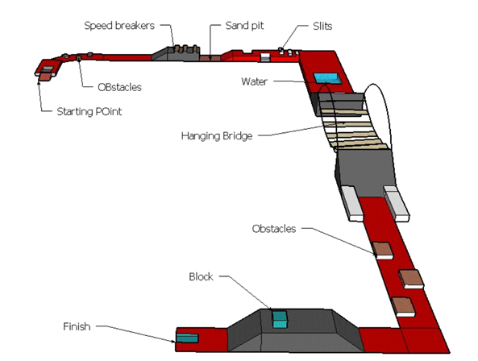
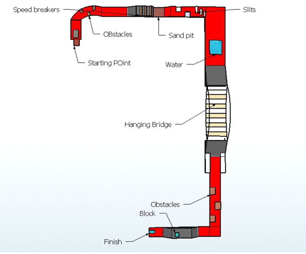
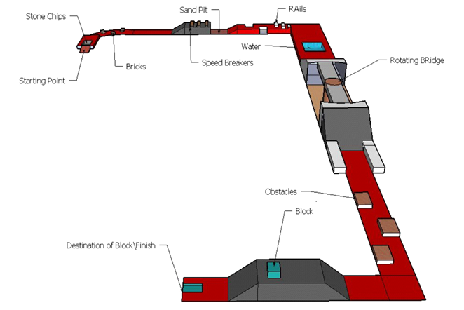
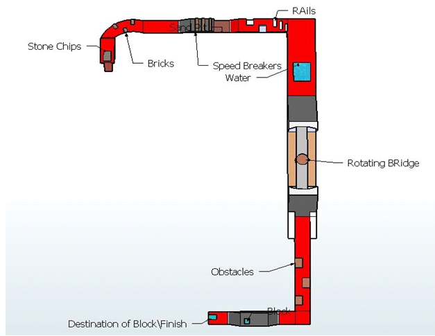

Introduction
So here it is, Ro-Terrance in its new avatar. Does your bot have what it takes to cover rough roads to reach its destination?? In this event the endurance and the capacity of the robot to navigate through difficult terrains would be tested. The robot would have to traverse through sand, gravels, water and through difficult terrains to reach its destination. Participants will have to design a robot that can efficiently cross all the obstacles present in the arena (see arena diagram) within minimum time.
Event Description
The Event Consists of an arena which is a pathway filled with obstacles as mentioned earlier. The bot must be able to follow the path (see arena) and overcome any obstacles coming its way, be it water, sand, gravel or any mechanical blockage. Points will be awarded on successfully overcoming any obstacle otherwise negative points will be awarded. The maximum time allotted for the completion of the task will be limited.
Objective
In this event the endurance and the capacity of the robot to navigate through difficult paths i.e. terrains will be tested. Participants will have to design a robot that can efficiently cross all the obstacles present in the arena (see arena diagram) within minimum time.
Bot Specifications
The dimensions of the bot can be up to a maximum of 30 X 30 X 30 cms (lxbxh) excluding the control device dimensions.
A bot may weigh up to 2 Kg. but not more than that.
Maximum voltage between any two points on the bot must not exceed 24 V dc.
The Chassis may be made of any material but the weight of the bot must not exceed 2 Kgs.
READYMADE BASES AND LEGO KITS ARE STRICTLY PROHIBITED.
The size of the bot may increase after the event commences.
Wheels can be of metal or any material but it must have a rubber tire around it.
Use of IC Engines is prohibited.
In case of wired bot sufficient amount of wire must be brought by the participants.
240 v AC will be supplied as a power source for the bots.
Arena: ROUND 1

Top View

Arena: ROUND 2

Top View

General Rules for Teams
- Each team may consist a maximum of five members.
- No participant can be present in two teams.
- Each member of the team must bring their own college ID cards.
- Teams will require to register themselves in the registration counter before they can participate in the event.
Gameplay Rules
- A team will be given a maximum time of six minutes to complete the whole task.
- Each team will be allowed to have a test run with their bot before the event commences.
- If the bot falls of the arena or is unable to cross any obstacle the team may use a hand touch and place the bot in its previous position. A total of four such hand touches will be allowed.
- If any team has to use a fifth hand touch it will be disqualified.
- If the bot is unable to cross any obstacle and the team wishes to manually cross the obstacle, then it will result in a penalty and the team will lose one hand touch.